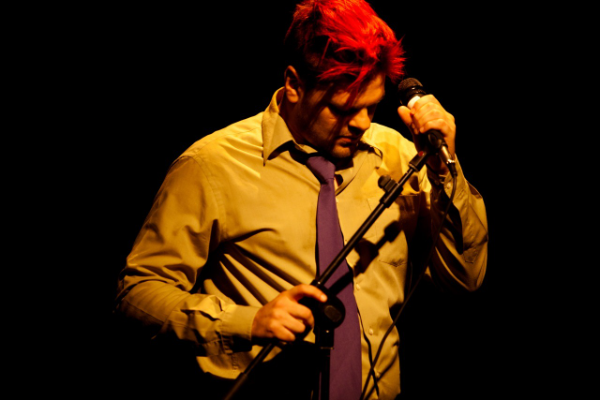

2009
Dalva
Criação da persona.
drag queen
Portal iDança(colunista e crítico convidado)
2009–2012.
escrita
Hipopótama(trilha sonora original)
Performance de Cândida Monte.
música
2010
Pig Lalangue
Solo integrante do 6 por ½ dúzia. Mostra Cena Breve, Curitiba (2010) · Festival Interação e Conectividade e Sesc Salvador (2011). Fotografia: Alessandra Haro.
Era como um stand-up: eu ficava parado na frente do microfone contando uma história. Só que a história era contada numa língua que eu inventei, a partir do português, da língua criola, de um pouco de latim e de um pouco de pig latin — daí o nome. As pessoas não entendiam o que eu dizia. Iam recebendo pistas pela música, pela iluminação, pelas minhas inflexões.

Fotografia: Alessandra Haro
10